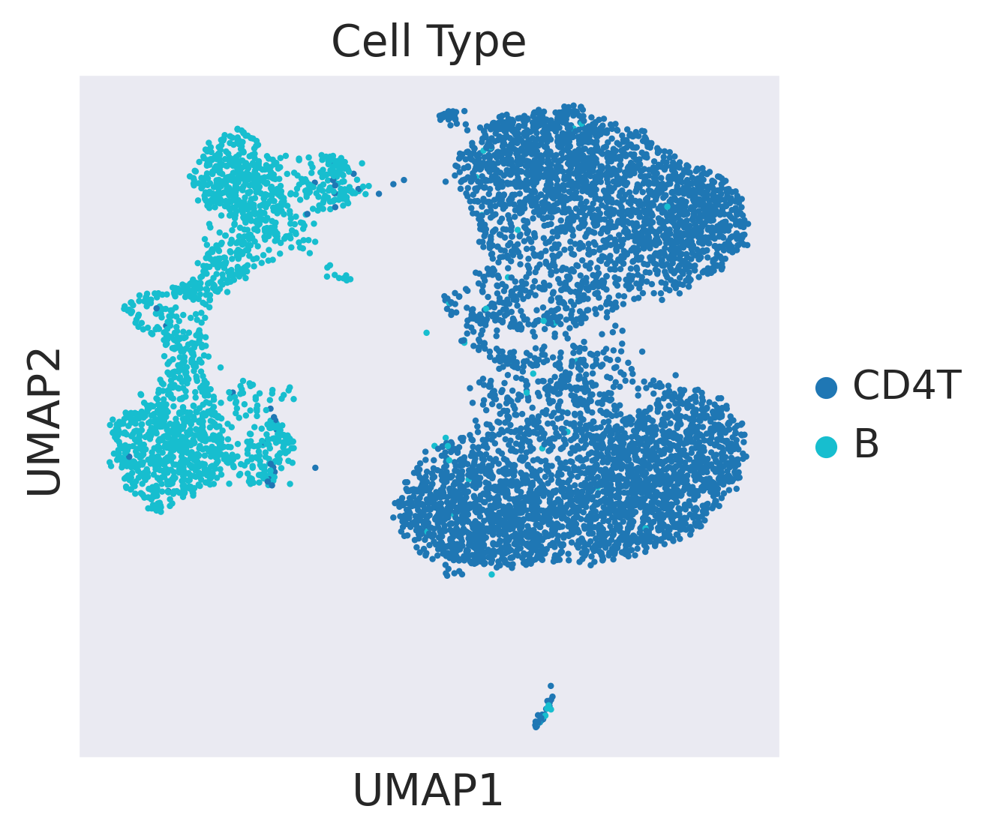
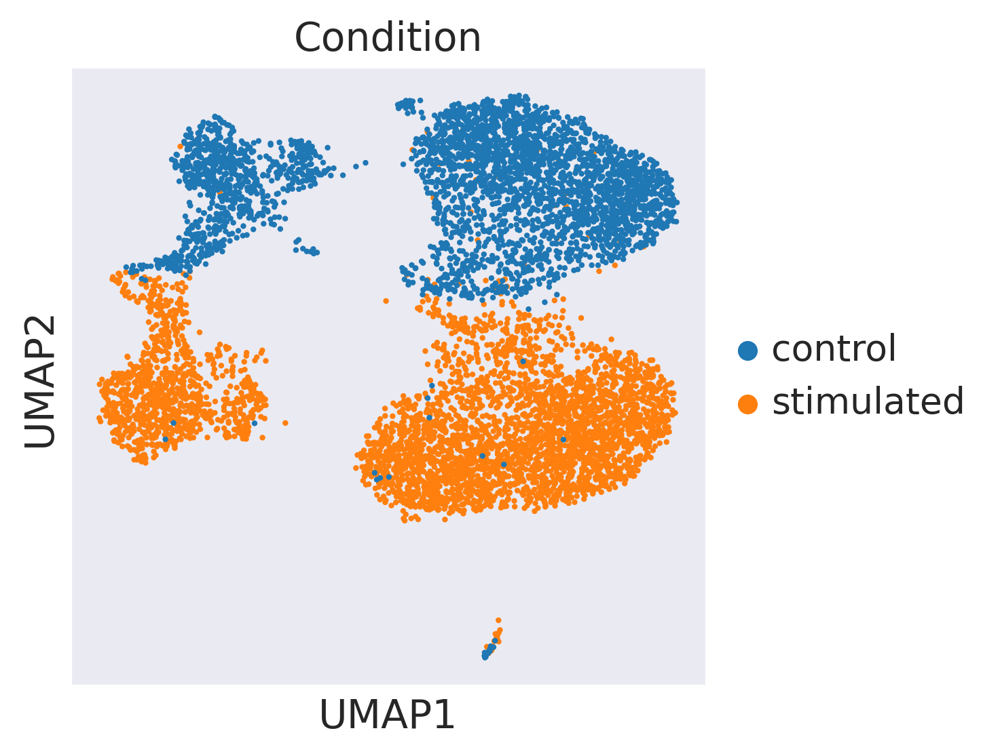
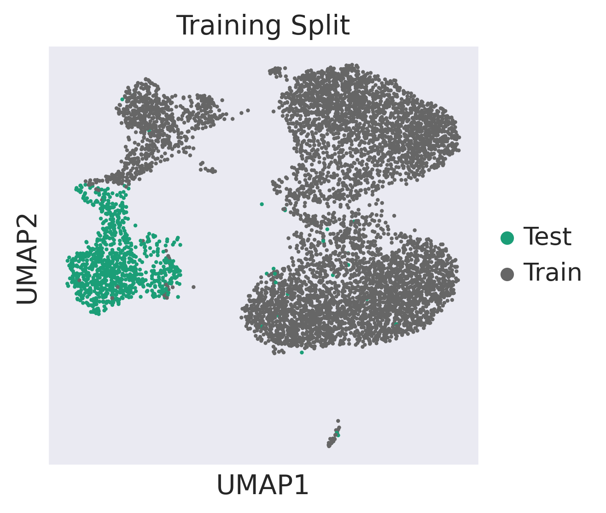
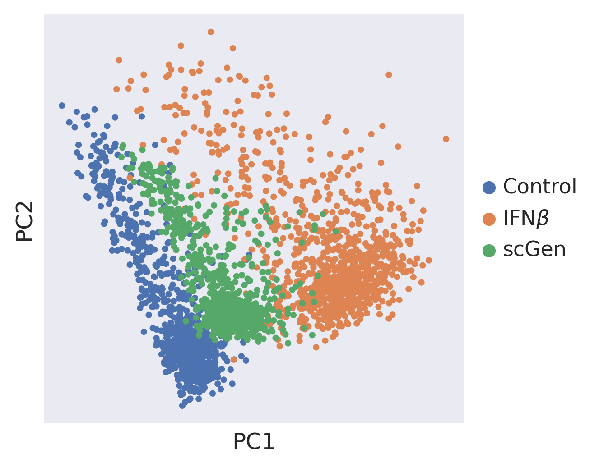
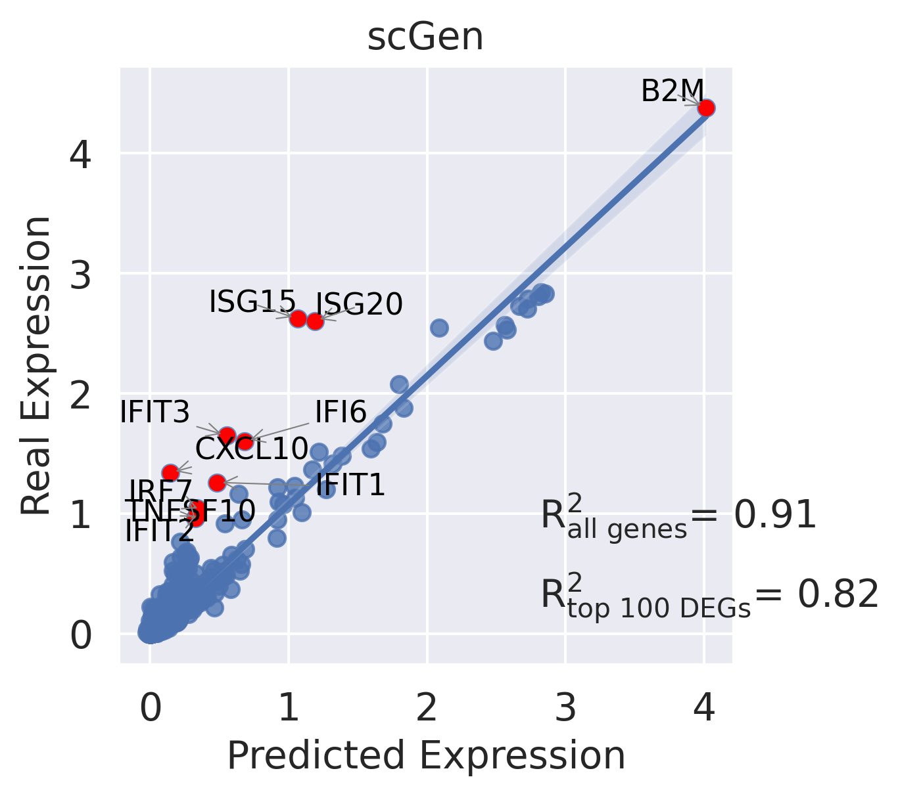
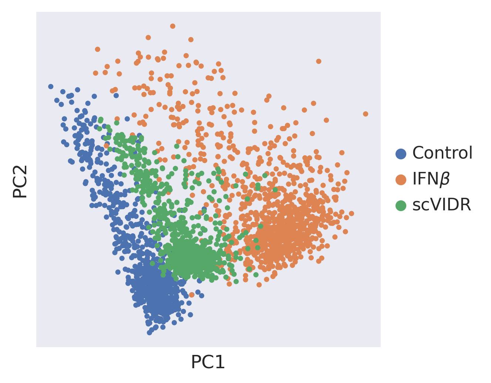
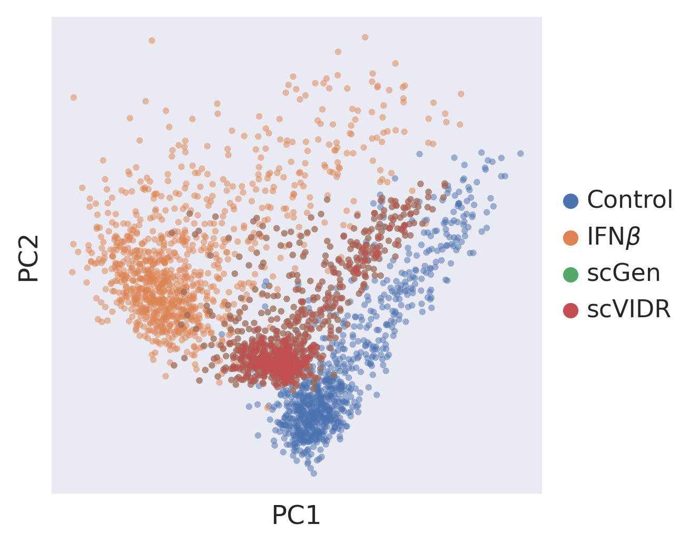

#Create Access to my code
import sys
sys.path.insert(1, '../vidr/')
#Import the vaedr functions we have created
from vidr import VIDR
from utils import *
#Import important modules
import scanpy as sc
import pandas as pd
import numpy as np
import torch
import seaborn as sns
from scipy import stats
from scipy import linalg
from scipy import spatial
from anndata import AnnData
from scipy import sparse
from statannotations.Annotator import Annotator
from matplotlib import pyplot as plt
import scvi
sc.set_figure_params(dpi = 150)
sc.settings.figdir = "../figures/"
sns.set_style("dark")
adata = sc.read("../data/kang2018.h5ad")
/mnt/ufs18/home-091/kanaomar/mambaforge/envs/scVIDR/lib/python3.8/site-packages/anndata/compat/__init__.py:232: FutureWarning: Moving element from .uns['neighbors']['distances'] to .obsp['distances'].
This is where adjacency matrices should go now.
warn(
/mnt/ufs18/home-091/kanaomar/mambaforge/envs/scVIDR/lib/python3.8/site-packages/anndata/compat/__init__.py:232: FutureWarning: Moving element from .uns['neighbors']['connectivities'] to .obsp['connectivities'].
This is where adjacency matrices should go now.
warn(
adata = adata[((adata.obs["cell_type"] == "B") | (adata.obs["cell_type"] == "CD4T"))]
#Training model
cell = "B"
train_adata, test_adata = prepare_data(adata, "cell_type", "condition", cell, "stimulated", normalized = True)
model = VIDR(train_adata, linear_decoder = False)
model.train(
max_epochs=100,
batch_size=128,
early_stopping=True,
early_stopping_patience=25)
[34mINFO [0m Using batches from adata.obs[1m[[0m[32m"condition"[0m[1m][0m
[34mINFO [0m Using labels from adata.obs[1m[[0m[32m"cell_type"[0m[1m][0m
[34mINFO [0m Using data from adata.X
[34mINFO [0m Computing library size prior per batch
[34mINFO [0m Successfully registered anndata object containing [1;36m6382[0m cells, [1;36m6998[0m vars, [1;36m2[0m batches, [1;36m2[0m labels, and [1;36m0[0m
proteins. Also registered [1;36m0[0m extra categorical covariates and [1;36m0[0m extra continuous covariates.
[34mINFO [0m Please do not further modify adata until model is trained.
/mnt/ufs18/home-091/kanaomar/mambaforge/envs/scVIDR/lib/python3.8/site-packages/scvi/model/base/_base_model.py:149: UserWarning: Make sure the registered X field in anndata contains unnormalized count data.
warnings.warn(
None
GPU available: True, used: True
TPU available: False, using: 0 TPU cores
LOCAL_RANK: 0 - CUDA_VISIBLE_DEVICES: [0,1,2,3]
Set SLURM handle signals.
Epoch 29/100: 29%|██▉ | 29/100 [00:30<01:13, 1.04s/it, loss=98.8, v_num=1]
model.save(f"../../data/VAE_Binary_Prediction_IFNB_7000g_2cell.pt", overwrite = True)
Supplemental Figure 9A¶
#UMAP Projection of latent space
latent_X = model.get_latent_representation(adata)
latent_adata = sc.AnnData(X=latent_X, obs=adata.obs.copy())
cell_condition = [f"{j}_{str(i)}" for (i,j) in zip(adata.obs["condition"], adata.obs["cell_type"])]
training = ["Train" if i != cell+"_stimulated" else "Test" for i in cell_condition]
latent_adata.obs["Cell_Condition"] = cell_condition
latent_adata.obs["Training Split"] = training
[34mINFO [0m Received view of anndata, making copy.
[34mINFO [0m Input adata not setup with scvi. attempting to transfer anndata setup
[34mINFO [0m Using data from adata.X
[34mINFO [0m Computing library size prior per batch
[34mINFO [0m Registered keys:[1m[[0m[32m'X'[0m, [32m'batch_indices'[0m, [32m'local_l_mean'[0m, [32m'local_l_var'[0m, [32m'labels'[0m[1m][0m
[34mINFO [0m Successfully registered anndata object containing [1;36m7375[0m cells, [1;36m6998[0m vars, [1;36m2[0m batches, [1;36m2[0m labels, and [1;36m0[0m
proteins. Also registered [1;36m0[0m extra categorical covariates and [1;36m0[0m extra continuous covariates.
/mnt/ufs18/home-091/kanaomar/mambaforge/envs/scVIDR/lib/python3.8/site-packages/scvi/model/base/_base_model.py:149: UserWarning: Make sure the registered X field in anndata contains unnormalized count data.
warnings.warn(
sc.pp.neighbors(latent_adata)
sc.tl.umap(latent_adata)
WARNING: You’re trying to run this on 100 dimensions of `.X`, if you really want this, set `use_rep='X'`.
Falling back to preprocessing with `sc.pp.pca` and default params.
ax = sc.pl.umap(latent_adata, color=['cell_type', 'condition'], frameon=True,palette = "tab10", save ="SF3A1.svg", title = "Cell Type")
WARNING: saving figure to file ../figures/umapSF3A1.svg
/mnt/ufs18/home-091/kanaomar/mambaforge/envs/scVIDR/lib/python3.8/site-packages/scanpy/plotting/_tools/scatterplots.py:392: UserWarning: No data for colormapping provided via 'c'. Parameters 'cmap' will be ignored
cax = scatter(

ax = sc.pl.umap(latent_adata, color=['condition'], frameon=True, save ="S3A2.svg", title = "Condition")
WARNING: saving figure to file ../figures/umapS3A2.svg
/mnt/ufs18/home-091/kanaomar/mambaforge/envs/scVIDR/lib/python3.8/site-packages/scanpy/plotting/_tools/scatterplots.py:392: UserWarning: No data for colormapping provided via 'c'. Parameters 'cmap' will be ignored
cax = scatter(

ax = sc.pl.umap(latent_adata, color=['Training Split'], frameon=True,palette="Dark2", save ="S3A3.svg")
WARNING: saving figure to file ../figures/umapS3A3.svg
/mnt/ufs18/home-091/kanaomar/mambaforge/envs/scVIDR/lib/python3.8/site-packages/scanpy/plotting/_tools/scatterplots.py:392: UserWarning: No data for colormapping provided via 'c'. Parameters 'cmap' will be ignored
cax = scatter(

Supplemental Figure 3B¶
ctrl_key = "control"
treat_key = "stimulated"
cell_type_to_predict = "B"
cell_type_key = model.scvi_setup_dict_["categorical_mappings"]["_scvi_labels"][
"original_key"
]
treatment_key = model.scvi_setup_dict_["categorical_mappings"]["_scvi_batch"][
"original_key"
]
ctrl_x = model.adata[model.adata.obs[treatment_key] == ctrl_key]
treat_x = model.adata[model.adata.obs[treatment_key] == treat_key]
#Balancing across treatments
adata_bal = ctrl_x.concatenate(treat_x)
adata_bal = random_sample(adata_bal, treatment_key, max_or_min = "min", replacement = False)
/mnt/ufs18/home-091/kanaomar/mambaforge/envs/scVIDR/lib/python3.8/site-packages/anndata/_core/anndata.py:1785: FutureWarning: X.dtype being converted to np.float32 from float64. In the next version of anndata (0.9) conversion will not be automatic. Pass dtype explicitly to avoid this warning. Pass `AnnData(X, dtype=X.dtype, ...)` to get the future behavour.
[AnnData(sparse.csr_matrix(a.shape), obs=a.obs) for a in all_adatas],
/mnt/ufs18/home-091/kanaomar/mambaforge/envs/scVIDR/lib/python3.8/site-packages/anndata/_core/anndata.py:1785: FutureWarning: X.dtype being converted to np.float32 from float64. In the next version of anndata (0.9) conversion will not be automatic. Pass dtype explicitly to avoid this warning. Pass `AnnData(X, dtype=X.dtype, ...)` to get the future behavour.
[AnnData(sparse.csr_matrix(a.shape), obs=a.obs) for a in all_adatas],
#Getting control for validation
adata_bal_ctrl = adata_bal[(adata_bal.obs[cell_type_key] == cell_type_to_predict) & (adata_bal.obs[treatment_key] == ctrl_key)]
#Getting latent representations
latent_bal = model.get_latent_representation(adata_bal)
latent_bal_adata = sc.AnnData(X=latent_bal, obs = adata_bal.obs.copy())
latent_cd = latent_bal_adata[(latent_bal_adata.obs[cell_type_key] == cell_type_to_predict) & (latent_bal_adata.obs[treatment_key] == ctrl_key)].X
[34mINFO [0m Input adata not setup with scvi. attempting to transfer anndata setup
[34mINFO [0m Using data from adata.X
[34mINFO [0m Computing library size prior per batch
[34mINFO [0m Registered keys:[1m[[0m[32m'X'[0m, [32m'batch_indices'[0m, [32m'local_l_mean'[0m, [32m'local_l_var'[0m, [32m'labels'[0m[1m][0m
[34mINFO [0m Successfully registered anndata object containing [1;36m6254[0m cells, [1;36m6998[0m vars, [1;36m2[0m batches, [1;36m2[0m labels, and [1;36m0[0m
proteins. Also registered [1;36m0[0m extra categorical covariates and [1;36m0[0m extra continuous covariates.
/mnt/ufs18/home-091/kanaomar/mambaforge/envs/scVIDR/lib/python3.8/site-packages/scvi/model/base/_base_model.py:149: UserWarning: Make sure the registered X field in anndata contains unnormalized count data.
warnings.warn(
#No regression on latent space
ctrl_x = latent_bal_adata[(latent_bal_adata.obs[treatment_key] == ctrl_key) & ~(latent_bal_adata.obs[cell_type_key] == cell_type_to_predict)].X.copy()
treat_x = latent_bal_adata[latent_bal_adata.obs[treatment_key] == treat_key].X.copy()
#Find scGen delta
latent_ctrl = np.average(ctrl_x, axis = 0)
latent_treat = np.average(treat_x, axis = 0)
scgen_delta = latent_treat - latent_ctrl
#Get deltas and control centroids for each cell tpye in the training dataset
deltas = []
latent_centroids = []
cell_types = np.unique(adata_bal.obs[cell_type_key])
for cell_i in cell_types:
if cell_i != cell_type_to_predict:
latent_ctrl = latent_bal_adata[(latent_bal_adata.obs[cell_type_key] == cell_i) & (latent_bal_adata.obs[treatment_key] == ctrl_key)].X
latent_treat = latent_bal_adata[(latent_bal_adata.obs[cell_type_key] == cell_i) & (latent_bal_adata.obs[treatment_key] == treat_key)].X
deltas_i = np.average(latent_treat, axis = 0) - np.average(latent_ctrl, axis = 0)
deltas.append(deltas_i)
latent_centroids.append(np.average(latent_ctrl, axis = 0))
lr = LinearRegression()
reg = lr.fit(latent_centroids, deltas)
scvidr_delta = reg.predict([np.average(latent_cd, axis = 0)])[0]
scVIDR Results¶
#Predict scVIDR results
treat_pred = scgen_delta + latent_cd
predicted_cells = model.module.generative(torch.Tensor(treat_pred))["px"].cpu().detach().numpy()
pred = sc.AnnData(X=predicted_cells , obs=adata_bal_ctrl.obs.copy(), var=adata_bal_ctrl.var.copy(),obsm=adata_bal_ctrl.obsm.copy(),)
pred.obs["condition"] = 'pred'
ctrl_adata = adata[((adata.obs['cell_type'] == cell) & (adata.obs["condition"] == "control"))]
treat_adata = adata[((adata.obs['cell_type'] == cell) & (adata.obs["condition"] == "stimulated"))]
eval_adata1 = ctrl_adata.concatenate(treat_adata, pred)
treatments = []
for i in eval_adata1.obs["condition"]:
if i == "control":
treatments.append("Control")
elif i == "stimulated":
treatments.append(r"IFN$\beta$")
else:
treatments.append("scGen")
eval_adata1.obs["Treatment"] = treatments
#PCA Projection
sc.tl.pca(eval_adata1)
sc.pl.pca(eval_adata1, color = "Treatment", frameon = True, title = "", save = "SF9B.svg")
#Regression Plot
CD4T = adata[adata.obs["cell_type"] ==cell]
sc.tl.rank_genes_groups(CD4T, groupby="condition", method="wilcoxon")
diff_genes = CD4T.uns["rank_genes_groups"]["names"]["stimulated"]
r2_value = model.reg_mean_plot(
eval_adata1,
axis_keys={"x": "pred", "y": r"stimulated"},
gene_list=diff_genes[:10],
top_100_genes = diff_genes[:100],
labels={"x": "Predicted Expression", "y": "Real Expression"},
path_to_save="../figures/SF9C1.svg",
show=True,
legend=False, title = "scGen")
print(r2_value)
/mnt/ufs18/home-091/kanaomar/mambaforge/envs/scVIDR/lib/python3.8/site-packages/anndata/_core/anndata.py:1785: FutureWarning: X.dtype being converted to np.float32 from float64. In the next version of anndata (0.9) conversion will not be automatic. Pass dtype explicitly to avoid this warning. Pass `AnnData(X, dtype=X.dtype, ...)` to get the future behavour.
[AnnData(sparse.csr_matrix(a.shape), obs=a.obs) for a in all_adatas],
/mnt/ufs18/home-091/kanaomar/mambaforge/envs/scVIDR/lib/python3.8/site-packages/anndata/_core/anndata.py:1785: FutureWarning: X.dtype being converted to np.float32 from float64. In the next version of anndata (0.9) conversion will not be automatic. Pass dtype explicitly to avoid this warning. Pass `AnnData(X, dtype=X.dtype, ...)` to get the future behavour.
[AnnData(sparse.csr_matrix(a.shape), obs=a.obs) for a in all_adatas],
/mnt/ufs18/home-091/kanaomar/mambaforge/envs/scVIDR/lib/python3.8/site-packages/anndata/_core/anndata.py:1785: FutureWarning: X.dtype being converted to np.float32 from float64. In the next version of anndata (0.9) conversion will not be automatic. Pass dtype explicitly to avoid this warning. Pass `AnnData(X, dtype=X.dtype, ...)` to get the future behavour.
[AnnData(sparse.csr_matrix(a.shape), obs=a.obs) for a in all_adatas],
WARNING: saving figure to file ../figures/pcaSF9B.svg
/mnt/ufs18/home-091/kanaomar/mambaforge/envs/scVIDR/lib/python3.8/site-packages/scanpy/plotting/_tools/scatterplots.py:392: UserWarning: No data for colormapping provided via 'c'. Parameters 'cmap' will be ignored
cax = scatter(

/mnt/ufs18/home-091/kanaomar/mambaforge/envs/scVIDR/lib/python3.8/site-packages/anndata/compat/_overloaded_dict.py:106: ImplicitModificationWarning: Trying to modify attribute `._uns` of view, initializing view as actual.
self.data[key] = value

(0.9138199316591675, 0.816085990613895)
#Predict scVIDR results
treat_pred = scvidr_delta + latent_cd
predicted_cells = model.module.generative(torch.Tensor(treat_pred))["px"].cpu().detach().numpy()
pred = sc.AnnData(X=predicted_cells , obs=adata_bal_ctrl.obs.copy(), var=adata_bal_ctrl.var.copy(),obsm=adata_bal_ctrl.obsm.copy(),)
pred.obs["condition"] = 'pred'
ctrl_adata = adata[((adata.obs['cell_type'] == cell) & (adata.obs["condition"] == "control"))]
treat_adata = adata[((adata.obs['cell_type'] == cell) & (adata.obs["condition"] == "stimulated"))]
eval_adata2 = ctrl_adata.concatenate(treat_adata, pred)
treatments = []
for i in eval_adata2.obs["condition"]:
if i == "control":
treatments.append("Control")
elif i == "stimulated":
treatments.append(r"IFN$\beta$")
else:
treatments.append("scVIDR")
eval_adata2.obs["Treatment"] = treatments
sc.tl.pca(eval_adata2)
sc.pl.pca(eval_adata2, color = "Treatment", frameon = True, title = "", save = "sup3C1.svg")
CD4T = adata[adata.obs["cell_type"] ==cell]
sc.tl.rank_genes_groups(CD4T, groupby="condition", method="wilcoxon")
diff_genes = CD4T.uns["rank_genes_groups"]["names"]["stimulated"]
r2_value = model.reg_mean_plot(
eval_adata2,
axis_keys={"x": "pred", "y": r"stimulated"},
gene_list=diff_genes[:10],
top_100_genes = diff_genes[:100],
labels={"x": "Predicted Expression", "y": "Real Expression"},
path_to_save="../figures/S3B2.svg",
show=True,
legend=False, title = "scVIDR")
print(r2_value)
/mnt/ufs18/home-091/kanaomar/mambaforge/envs/scVIDR/lib/python3.8/site-packages/anndata/_core/anndata.py:1785: FutureWarning: X.dtype being converted to np.float32 from float64. In the next version of anndata (0.9) conversion will not be automatic. Pass dtype explicitly to avoid this warning. Pass `AnnData(X, dtype=X.dtype, ...)` to get the future behavour.
[AnnData(sparse.csr_matrix(a.shape), obs=a.obs) for a in all_adatas],
/mnt/ufs18/home-091/kanaomar/mambaforge/envs/scVIDR/lib/python3.8/site-packages/anndata/_core/anndata.py:1785: FutureWarning: X.dtype being converted to np.float32 from float64. In the next version of anndata (0.9) conversion will not be automatic. Pass dtype explicitly to avoid this warning. Pass `AnnData(X, dtype=X.dtype, ...)` to get the future behavour.
[AnnData(sparse.csr_matrix(a.shape), obs=a.obs) for a in all_adatas],
/mnt/ufs18/home-091/kanaomar/mambaforge/envs/scVIDR/lib/python3.8/site-packages/anndata/_core/anndata.py:1785: FutureWarning: X.dtype being converted to np.float32 from float64. In the next version of anndata (0.9) conversion will not be automatic. Pass dtype explicitly to avoid this warning. Pass `AnnData(X, dtype=X.dtype, ...)` to get the future behavour.
[AnnData(sparse.csr_matrix(a.shape), obs=a.obs) for a in all_adatas],
WARNING: saving figure to file ../figures/pcasup3C1.svg
/mnt/ufs18/home-091/kanaomar/mambaforge/envs/scVIDR/lib/python3.8/site-packages/scanpy/plotting/_tools/scatterplots.py:392: UserWarning: No data for colormapping provided via 'c'. Parameters 'cmap' will be ignored
cax = scatter(

/mnt/ufs18/home-091/kanaomar/mambaforge/envs/scVIDR/lib/python3.8/site-packages/anndata/compat/_overloaded_dict.py:106: ImplicitModificationWarning: Trying to modify attribute `._uns` of view, initializing view as actual.
self.data[key] = value
(0.9138199316591675, 0.816085990613895)
Supplemental Figure 3C¶
eval_list = [eval_adata2[eval_adata2.obs.Treatment == "scVIDR"],
]
eval_adata = eval_adata1.concatenate(eval_list)
/mnt/ufs18/home-091/kanaomar/mambaforge/envs/scVIDR/lib/python3.8/site-packages/anndata/_core/anndata.py:1785: FutureWarning: X.dtype being converted to np.float32 from float64. In the next version of anndata (0.9) conversion will not be automatic. Pass dtype explicitly to avoid this warning. Pass `AnnData(X, dtype=X.dtype, ...)` to get the future behavour.
[AnnData(sparse.csr_matrix(a.shape), obs=a.obs) for a in all_adatas],
/mnt/ufs18/home-091/kanaomar/mambaforge/envs/scVIDR/lib/python3.8/site-packages/anndata/_core/anndata.py:1785: FutureWarning: X.dtype being converted to np.float32 from float64. In the next version of anndata (0.9) conversion will not be automatic. Pass dtype explicitly to avoid this warning. Pass `AnnData(X, dtype=X.dtype, ...)` to get the future behavour.
[AnnData(sparse.csr_matrix(a.shape), obs=a.obs) for a in all_adatas],
sc.tl.pca(eval_adata)
sc.pl.pca(eval_adata, color = "Treatment", frameon = True, title = "", save = "S3C.svg", alpha = 0.5)
WARNING: saving figure to file ../figures/pcaS3C.svg
/mnt/ufs18/home-091/kanaomar/mambaforge/envs/scVIDR/lib/python3.8/site-packages/scanpy/plotting/_tools/scatterplots.py:392: UserWarning: No data for colormapping provided via 'c'. Parameters 'cmap' will be ignored
cax = scatter(
